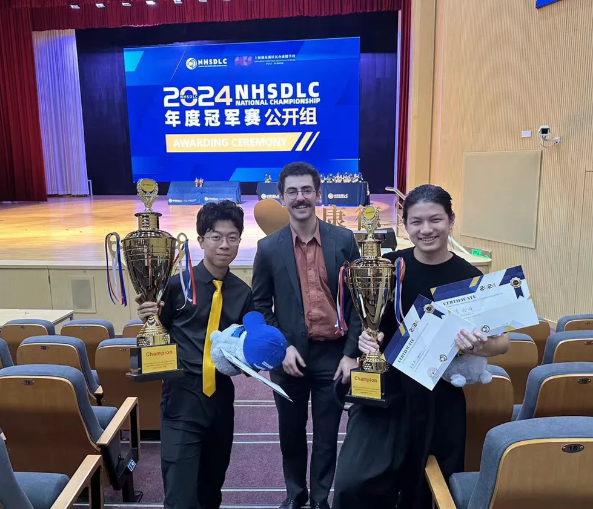

Philosophy classes and ethics competitions for students
The Modus Ponens Institute teaches philosophy, ethics and logic to school students, online and in schools, and runs international ethics competitions.
- 1P→Q
If philosophy is for the sake of the good life, students should get to do it.
Premise - 3Q
Students should get to do it.
1, 2, modus ponens
Philosophy for students, from first class to international final
Live classes and tutoring
Philosophy, ethics and logic in small, discussion-based groups on Zoom, from four-day camps to ongoing classes.
Explore classes →
Ethics competitions
Ethics Olympiads, TKEthics Invitationals and Global AI Debates. Compete online, get judge feedback, qualify for international finals.
See competitions →
School visits and team training
We visit schools to teach philosophy and ethics, help teachers start ethics teams, and help run competitions. In person or on Zoom.
Plan a visit →
Free resources
A free lecture on ethical theories, the competitor handbook, a 10-class course for teachers and the official match timer.
Start learning →
 9 min
9 min
New to ethics? Start here.
In nine minutes, Archie Stapleton introduces the three lenses you can use on any ethics case: consequentialism, deontology and virtue ethics. It comes with free theory grids for planning your own cases.
- Lens 1Consequentialism
- Lens 2Deontology
- Lens 3Virtue ethics
What teachers say about the Ethics Olympiad
“Many of our students said this is the most meaningful extracurricular learning experience they have had.”
“A great competition, well organised and run. For a first time participant it could not have been easier.”
“I can’t emphasise enough the positive feedback that the silver medal has had on participating students.”
“The nature of this event being collaborative yet competitive is wonderful and so needed in our world.”
“The program has gone from strength to strength, with our senior teams winning gold in Victoria.”
Latest news
See all newslettersSeptember 2026 Newsletter: International Final and Novice Results
Congratulations to our 2026 TKEthics International Grand Final and first-ever Novice Invitational medalists, plus the Fall Invitational early-bird deadline.
August 2026 Newsletter: A Look Back at Shanghai, Summer Camps & Fall Events
Our July in Shanghai teaching AI, ethics and debate, last places in the summer philosophy camps, and the fall 2026 event line-up.
July 2026 Newsletter: China Coding-Ethics and Debate Camps, Online Philosophy Camps
Tech for Good AI Innovation Camp and GE-Elite Public Forum debate camp in Shanghai, plus our August online philosophy camps.